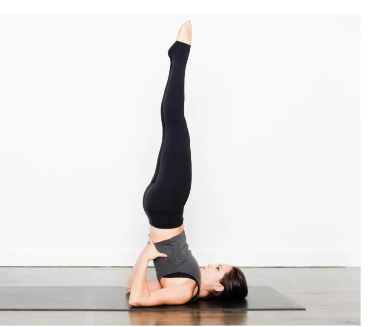
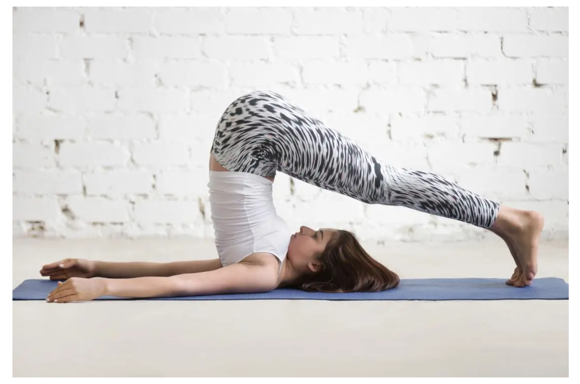
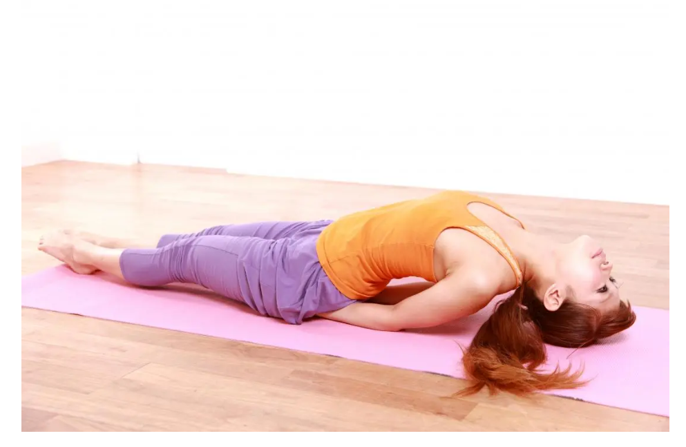
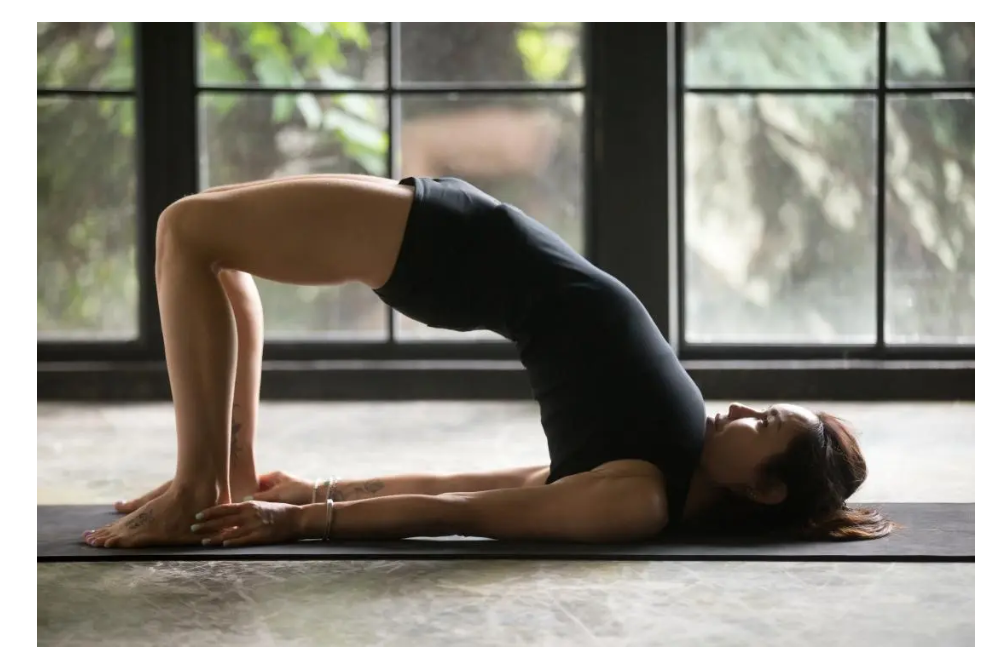
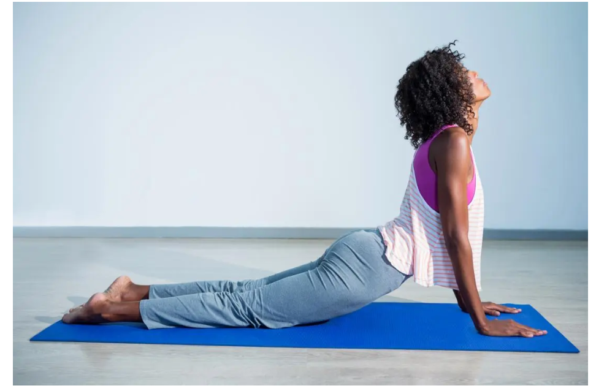
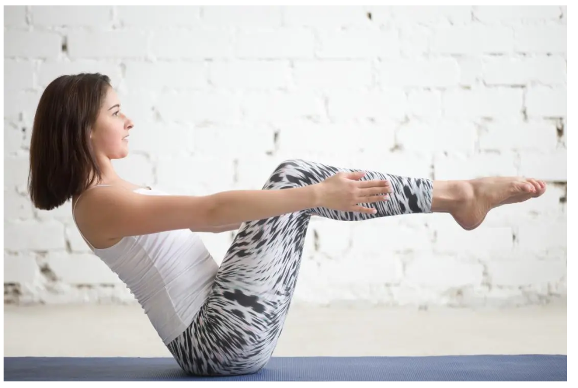

Yogasanas

Supported shoulder stand
- To do a supported shoulder stand, a person should:
- lie down flat on the back
- place a folded towel or blanket under the shoulders to support them
- bring the shoulders to the edge of the towel while resting the head on the mat
- place the arms on either side with palms facing down
- press arms and back firmly into the floor
- breathe in and lift legs up at a right angle
- breathe out and lift legs up, pushing up onto the shoulders
- push hands into the lower back to support the hips
- keep the stomach pulled in, so the core is strong
- hold the body and legs in a straight line up from the shoulders
- keep the chin tucked into the chest
- breathe deeply three times
- lower the legs back down slowly, keeping the core engaged

Plow Pose
- To do the Plow Pose, a person should begin in the same way as for a shoulder stand.
- Rather than holding the legs up in a straight line from the shoulders, they should:
- bring the legs right over and behind their head
- rest their toes on the floor behind their head
- keep their lower back supported with their hands throughout
- breathe deeply three times
- bring the legs back above the head
- slowly lower the legs back to the floor, keeping the core engaged
- The Plow is a safe pose, but it may feel uncomfortable for people who are overweight or women with larger breasts.
- If a person feels like the Plow Pose makes breathing difficult, they should slowly come out of the position.

Fish Pose
- To do the Fish Pose, a person should:
- sit down with the legs extended in front of them
- place the hands on the mat behind them with their fingers tucked under their buttocks
- lower the elbows to the mat and lean backward
- align the shoulders with the elbows
- gently drop the head back as far as it feels comfortable, with the eventual aim of touching the crown of the head on the mat
- keep the chest up and open, imagining a string pulling it up to the sky
- breathe deeply three times
- slowly lift the head up and release the arms to come out of the position

Bridge Pose
- To do the Bridge Pose, a person should:
- lie on the mat with their back on the floor
- draw the feet inwards towards their hips
- keep the feet and knees in line with the hips
- with arms by the sides of the body, press the palms into the floor
- lift the hips up to the sky, imagining a string pulling the hips upward
- if this is difficult, put the palms on the lower back for support
- tuck the chin into the chest
- breathe deeply three times
- slowly lower the hips to come out of the position

Cobra Pose
- To do this pose, a person should:
- lie down on their stomach on the mat
- place the palms on the mat under the shoulders
- squeeze the elbows into their sides
- press the palms into the mat
- lift the head up until the chest lifts of the mat and the back is arched
- drop the head back towards the bottom if this feels comfortable
- breathe deeply three times
- slowly lower chest and head back down to the mat

Boat Pose
- To do this pose, a person should:
- lie down on their stomach on the mat
- place the palms on the mat under the shoulders
- squeeze the elbows into their sides
- press the palms into the mat
- lift the head up until the chest lifts of the mat and the back is arched
- drop the head back towards the bottom if this feels comfortable
- breathe deeply three times
- slowly lower chest and head back down to the mat